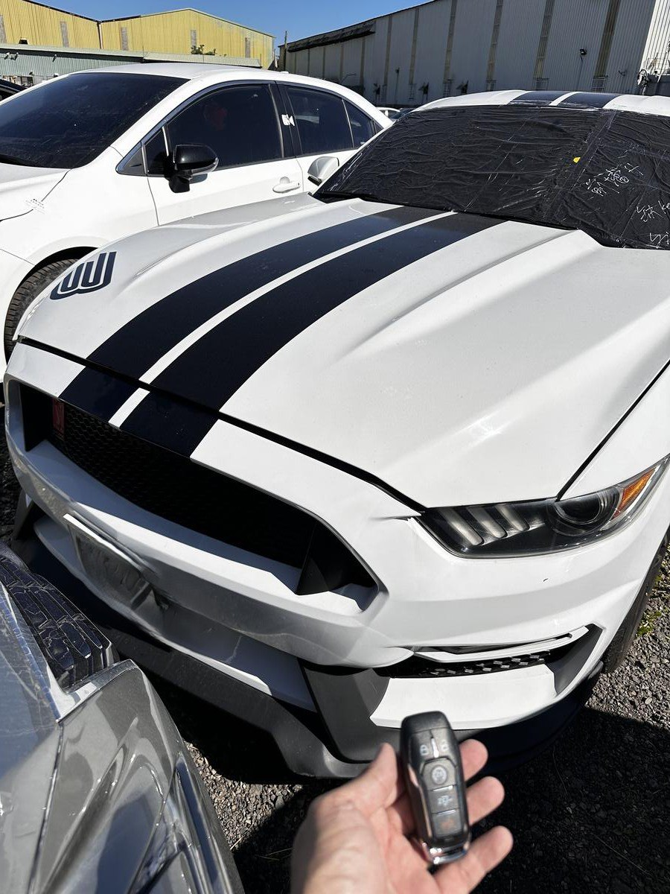

Ford 美系車智慧鑰匙備份與全丟風險檢查

現場實拍：Ford Mustang 野馬旗艦款，智慧感應鑰匙全丟車況確認紀錄
隨著美系車門檻降低，Ford 系列（特別是經典的 Mustang 野馬）的智慧鑰匙需求大增。這類肌肉跑車的安全等級極高，全丟時的挑戰絕非一般鎖店能應付。
智慧鑰匙與電子安全設定：先確認、再規劃
Ford Mustang 這類美系車通常具備完整的智慧鑰匙與啟動安全設定。若只剩一支鑰匙，建議先安排備份；若已經全丟，則先提供車款年份、所在地與照片，讓我們判斷可行的到場處理方式。